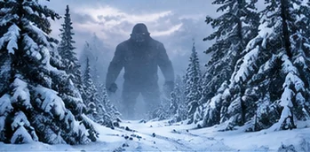

Siberia Giant Video: Why Viral Footage Needs Independent Verification

A mysterious shape in a snowy landscape, a dramatic television clip and a headline promising something enormous: it is a recipe for viral curiosity. But what does the footage actually show?
Here is the situation
The appearance of footage on television or social media does not by itself verify the event depicted. The essential questions are whether the broadcast can be identified, whether the footage is original, and whether independent observers can confirm scale and location. Editing, forced perspective and miscaptioned archival clips can all mislead viewers.
The bigger picture
TNS has not verified the video or its claimed Russian broadcast. No extraordinary conclusion is warranted from the headline alone.
What happens next
Sometimes the explanation is ordinary. Sometimes the evidence is simply too thin. Either way, the mystery is worth approaching with open eyes. Tex will keep you updated on this story right here at Texas News Studio.
Verification status: the specific headline has not been independently confirmed from a primary source.